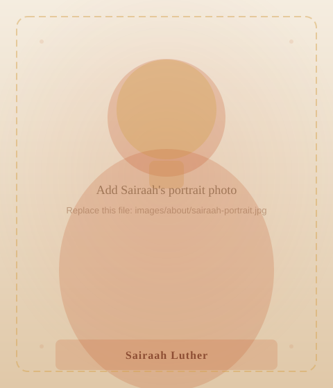
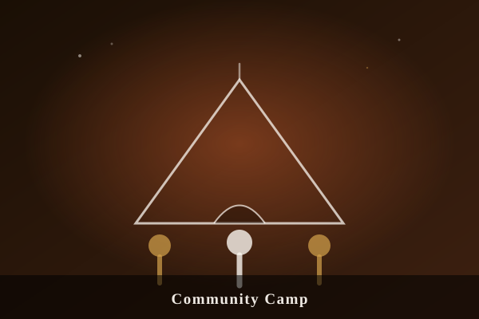
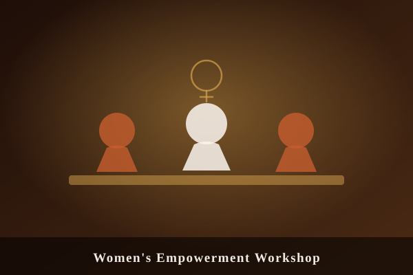
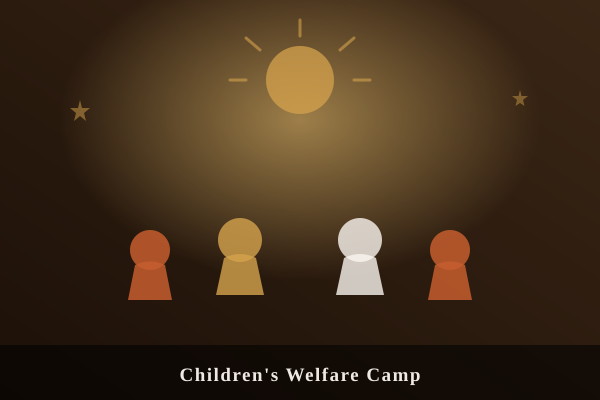
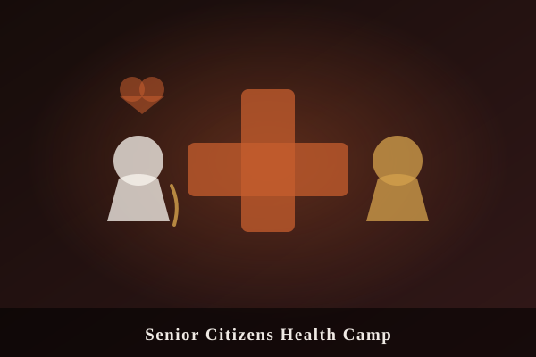

Youth Founder & Student Ambassador
Sairaah Luther
Building tomorrow's compassion, one community at a time.
Learn More
Meet Sairaah
"Service is not something I do — it is who I am. When you have seen what one act of kindness can mean to someone who has nothing, going back to doing nothing is simply not an option."
— Sairaah Luther
Sairaah Luther is a dedicated young humanitarian and the Youth Founder at May Care Foundation Trust — a registered charitable trust working to uplift the most vulnerable in our communities. From an early age, Sairaah recognised the quiet, urgent need around her and chose to turn that recognition into action, devoting her energy to causes that matter most to those who have the least.
As Student Ambassador, she serves as the bridge between the Foundation's grassroots work and the next generation of changemakers. Sairaah mobilises student volunteers across schools and colleges, leads awareness campaigns, and represents May Care Foundation Trust at community events and outreach programmes — ensuring young voices are always part of the conversation.
Her work spans women's empowerment, children's welfare, and senior citizen care. Every programme she touches is shaped by the same conviction: that dignity is not a privilege — it is a right — and that a community only truly thrives when no one is left behind.
- 500+ Lives Touched
- 30+ Community Camps
- 3 Years of Service
May Care Foundation Trust
May Care Foundation Trust is a registered charitable trust committed to creating lasting, dignified change at the grassroots level. Founded on the conviction that every individual — regardless of age, gender, or circumstance — deserves care and opportunity, the Trust operates through community-driven programmes that reach women, children, and elderly citizens, providing not just resources, but dignity, purpose, and hope.
Our Mission
"To nurture inclusive communities through compassion-led action — empowering women, protecting children, and restoring dignity to our elders, one life at a time."
Our Focus Areas
-
Women Empowerment
Providing skill-building workshops, legal awareness sessions, and peer support networks that help women reclaim their agency, build financial independence, and lead with confidence.
-
Children's Welfare
Running nutrition drives, educational support camps, and recreational programmes to ensure every child has the safe foundation they need to learn, grow, and thrive.
-
Senior Citizens Care
Organising health check-up camps, companionship visits, and welfare drives that restore warmth, dignity, and a sense of belonging to elderly members of our community.
What I Do
From coordinating large-scale community camps to speaking at student assemblies, here is a snapshot of how I contribute to May Care Foundation Trust's mission every day.
-
Community Camps
Organising and leading multi-day camps that bring health check-ups, nutrition support, and welfare services directly into underserved neighbourhoods — making care accessible to those who need it most.
-
Women & Children Outreach
Visiting shelters, schools, and community centres to deliver awareness programmes, distribute essentials, and connect families directly with Foundation resources and support networks.
-
Student Engagement
Partnering with schools and colleges to involve young people in meaningful, hands-on volunteering — fostering a generation that leads with empathy, initiative, and genuine compassion.
-
Public Speaking
Representing May Care Foundation Trust at events, panels, and student assemblies — sharing stories from the field and inspiring others to move from awareness into action.
-
Volunteer Coordination
Recruiting, onboarding, and guiding volunteer teams to ensure every outreach programme is delivered with care, consistency, and deep respect for those we serve.
-
Donation Drives
Planning and executing donation campaigns — from clothing and food drives to fundraising events — that sustain May Care Foundation Trust's year-round programmes and operations.
Gallery
Moments from community camps, outreach visits, and events — a glimpse into the work happening on the ground across our programmes.
-

Community Camp -

Women's Empowerment Workshop -

Children's Welfare Camp -

Senior Citizens Health Camp -
Student Engagement Event -
Donation Drive
Contact
Whether you'd like to collaborate, volunteer, make a donation, or simply learn more about May Care Foundation Trust's work, we'd love to hear from you.